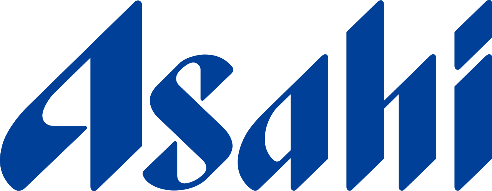

홈 > 브랜드 매거진 > INAX
INAX
INAX(이낙스)는 타일과 위생도기 등을 만드는 일본의 건축자재 기업이다. 1924년 이나 하츠노조가 설립한 이나세이토(Ina Seito)가 모태로, 모토오 나카니시의 PAOS가 1983년부터 코퍼레이트 아이덴티티 작업을 진행해 1985년 'INAX'로 사명을 바꾸며 새 정체성을 도입했다. 새 사명은 국내외 3만 7천여 개 후보를 추려 선정됐다.
산업 분야 브랜드·비즈니스 · 공개 등급 편집 검수 · 브랜드 평가 4 ★
IN
INAX
한눈에 보는 브랜드
INAX(이낙스)는 타일과 위생도기 등을 만드는 일본의 건축자재 기업이다. 1924년 이나 하츠노조가 설립한 이나세이토(Ina Seito)가 모태로, 모토오 나카니시의 PAOS가 1983년부터 코퍼레이트 아이덴티티 작업을 진행해 1985년 'INAX'로 사명을 바꾸며 새 정체성을 도입했다.
새 사명은 국내외 3만 7천여 개 후보를 추려 선정됐다.
브랜드 관점
이낙스 로고는 일본 코퍼레이트 아이덴티티(CI) 디자인사의 대표 사례로 꼽힌다. 1984~1985년 디자인 컨설팅 회사 파오스(PAOS)와 창업자 나카니시 모토오(中西元男)가 작업했다.
60주년을 앞두고 이나공업이 사명과 시각 정체성을 전면 개편했고, 파오스는 세 개 시안 중 동적인 대문자 'I'를 채택했다. 포지티브·네거티브 공간과 예각을 활용해 글자가 표면에서 떠오르는 듯한 인상을 주었고, 이는 욕실의 공간성을 반영한 '스페이스 심볼'로 불렸다.
로고는 차량 도장부터 매장 사인, 소형 패키지까지 세로·가로축으로 신축하도록 설계되어 유연성을 확보했다. '어메니티 블루'를 화이트·블랙과 함께 써 지성·기술적 정확성·청결함을 표현했다.
나카니시는 약 150개 기업의 CI를 다뤘으며 1985년 파오스 뉴욕·보스턴을 세웠다.
시작과 성장
1924년(다이쇼 13년) 2월 이나 하쓰노조의 장남 이나 조사부로가 법인화해 모리무라 그룹의 타일 제조사 이나제도(伊奈製陶) 주식회사를 설립한 것이 기원이다. 같은 그룹의 도요도기(훗날 토토)와 함께 위생도기 분야에서 경쟁 관계를 형성했고, 1945년 위생도기 제조를 시작했다.
1984년 60주년을 앞두고 사장 이나 데루조가 새 사명과 코퍼레이트 아이덴티티 개발에 착수했다. 국내외에서 3만 7천여 건의 사명안을 검토한 끝에, 1985년 4월 21일 디자인 회사 파오스가 주도한 CI를 실시하며 사명을 주식회사 이낙스(INAX)로 바꿨다.
'INAX5'라는 기업 이념과 'XSITE' 쇼룸, 'XyLIFE' 욕실 인테리어 매장 등이 함께 도입되었다. 이후 2001년 토스템과 경영 통합해 지주회사 이낙스토스템 홀딩스 산하로 들어갔다.
브랜드 아이덴티티
심볼은 양·음의 공간과 예각으로 구성된 동적인 대문자 'I' 형태의 '공간 심볼(space symbol)'로, 표면에서 떠오르는 듯한 인상을 주어 욕실·공간의 성격과 기업의 공간 디자인 지향을 표현한다. 수직·수평으로 확대·축소돼 차량 도장부터 점포 사이니지까지 다양하게 적용되도록 설계됐고, 주색으로는 'Amenity Blue'로 명명된 파랑을 흑·백과 함께 사용했다.
CI 전략에는 기업 비전을 객체화한 'INAX 5' 같은 원칙과 쇼룸 등 파생 프로그램이 포함됐다.
제품과 서비스
타일, 위생도기, 변기 등 수도 설비, 건축자재·주택설비를 주력으로 한다. 아이치현 도코나메의 도자 산업에 뿌리를 두었으며, 현지에 도자·건축도기 박물관을 운영해 지역 도예 유산을 보존한다.
사람들
현재 상태
2011년 4월 1일 토스템·신일경·도요엑스테리어 등과 합병해 주식회사 리크실(LIXIL) 2대 법인이 출범하면서, 이낙스는 리크실 그룹의 제품 브랜드명이 되었다. 현재 리크실 산하 화장실·배관 사업의 핵심 브랜드로 기능한다.
타임라인
BI/CI 변천사
확인된 BI/CI 이미지가 아직 없습니다.
함께 읽을 브랜드
BO
BOL
브랜드·비즈니스 · 편집 검수BOLBOL는 2015년에 기록된 Designed by B&B Studio 계열의 브랜드 아이덴티티 사례입니다. B&B Studio가 아이덴티티 작업의 디자이너로 기록되어...
 브랜드·비즈니스 · 편집 검수Zexel
브랜드·비즈니스 · 편집 검수ZexelZexel는 1991년에 기록된 Designed by PAOS 계열의 브랜드 아이덴티티 사례입니다. PAOS가 아이덴티티 작업의 디자이너로 기록되어 있습니다. 공개...
Ka
Kawatetsu / Kawasaki Steel Corporation
브랜드·비즈니스 · 편집 검수Kawatetsu / Kawasaki Steel CorporationKawatetsu / Kawasaki Steel Corporation는 1989년에 기록된 Designed by PAOS 계열의 브랜드 아이덴티티 사례입니다. PAO...
 브랜드·비즈니스 · 편집 검수Aneo
브랜드·비즈니스 · 편집 검수AneoAneo는 2026년에 기록된 Recently added 계열의 브랜드 아이덴티티 사례입니다. Scandinavian Design Group가 아이덴티티 작업의 디자...

브랜드·비즈니스 · 편집 검수AsahiAsahi는 1988년에 기록된 Designed by PAOS 계열의 브랜드 아이덴티티 사례입니다. PAOS가 아이덴티티 작업의 디자이너로 기록되어 있습니다. 공개...
Ju
Juchheim's
브랜드·비즈니스 · 편집 검수Juchheim'sJuchheim's는 1982년에 기록된 From Japan 계열의 브랜드 아이덴티티 사례입니다. PAOS가 아이덴티티 작업의 디자이너로 기록되어 있습니다. 공개 섹...
Ma
Maebishi Shinkin Bank
브랜드·비즈니스 · 편집 검수Maebishi Shinkin BankMaebishi Shinkin Bank는 1994년에 기록된 Banking 계열의 브랜드 아이덴티티 사례입니다. PAOS가 아이덴티티 작업의 디자이너로 기록되어 있습...
 브랜드·비즈니스 · 편집 검수Sigma
브랜드·비즈니스 · 편집 검수SigmaSigma는 2025년에 기록된 From Japan 계열의 브랜드 아이덴티티 사례입니다. Stockholm Design Lab가 아이덴티티 작업의 디자이너로 기록되어...